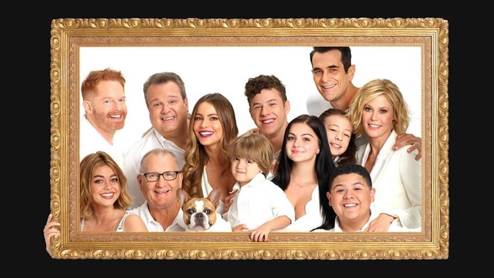

It is really a good game.I haven't even been to the main plot, but to play the branch plot and characters. It's also very interesting and doesn't feel boring at all.
Modern family series is my favorite American drama, which has been out for 11 seasons. Each season has 24 episodes, each episode lasts 20 minutes, which is very concise. The story of each episode is closely related. It includes many elements, such as housewives, gay couples, remarried families, adoptive families, problem teenagers and old age. Each episode can lead to deep thinking, moving people to tears, or happy dancing. I accompany it and witness its growth. It is definitely a masterpiece that I will take out and watch again at every age.
He is my favorite singer in 2021. Every song in his ace album "Montero" has different styles and sings his attitude. Taught a lesson to those who questioned him. He has five seats on my spotify annual list.